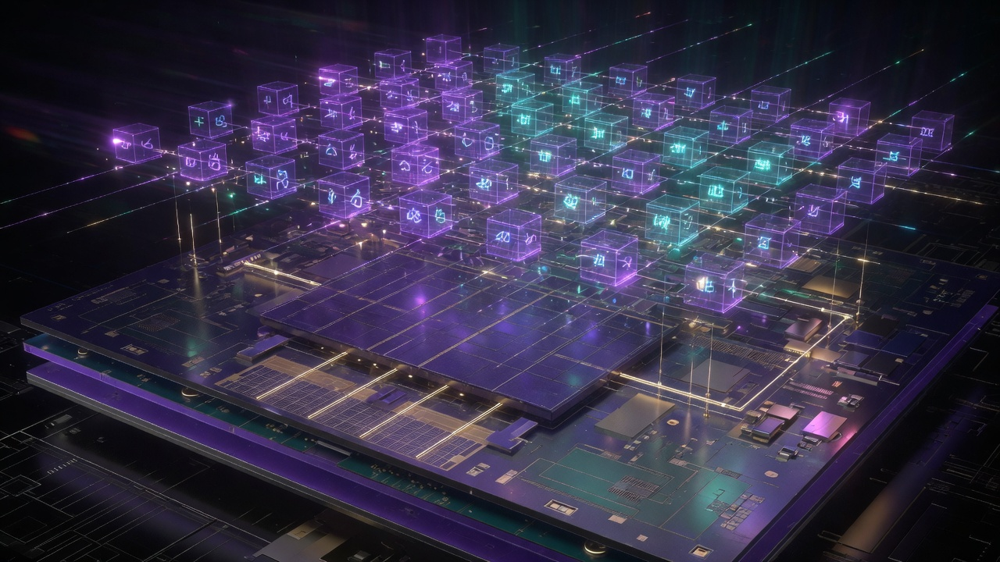

Chapter 7 · Offensive Dispatch — GPU Field Engine
Learning objectives
After this chapter you should be able to:
- Trace the full dispatch spine from
main.cppthroughvkCmdDispatchand name what runs on host versus GPU. - Explain why the default canvas is
x86.compwithFieldSocketpush constants, not decorative raymarch. - Enumerate the Vulkan descriptor bindings for the x86 path and state why
FIELD_LAYOUT_VERSION = 5is a contract, not decoration. - Describe how
rtx(), sealed time, and analog fabric bindings 8–10 integrate into one offensive write each tick. - Run week-one grep drills that prove dispatch is alive before you trust screenshots.
On the way — what you will learn
Offense writes the field; defense reads it. On the way you will trace main.cpp through vkCmdDispatch, master the x86 descriptor layout, seal time in FieldSocket, and treat FIELD_LAYOUT_VERSION = 5 as a contract, not decoration.

- Thin host, fat GPU architecture
- Canvas kinds: X86Fields versus Classic
- dispatch_canvas ritual ordering
- Bindings 8–10 and ThermoAccountant every tick
Introduction — offense writes the field
Chapters 5 and 6 taught defense: reading the packet field, separating RF meanings, refusing to let someone else narrate your perimeter. Chapter 7 turns the spear around. Offense, in Field Technology, is imposing boundary conditions on the next tick faster than confusion propagates. Defense reads continuous state; offense writes it. The write happens on the GPU, every frame, through a single Vulkan dispatch that the thin C++ host orchestrates but does not simulate.
This is not metaphor dressed as engineering. When you run ./linux.sh run, the default path boots the Field Die — a 64 MiB guest universe on silicon — and evolves Phi, Thermo, and Flow fabrics through x86.comp. The host opens the window, seals time, enforces CFL guards, packs data_bus[64], and calls vkCmdDispatch. The GPU runs the world. If you remember one sentence from this chapter, remember this: the spear is vkCmdDispatch, not a motivational poster.
Chapter 8 owns the die byte map and bus slots. Chapter 9 owns CFL and Tesla valve constants. Chapter 10 mirrors fabric into hardwareFabric. Chapter 11 teaches you to grep the receipts. Chapter 12 lists every rock. This chapter is the spine that connects them: how dispatch actually happens, what must match between host and shader, and why version skew is desynchronized reality.
Thin host, fat GPU — architectural contract
Modern game engines often split work across CPU and GPU in complex ways — physics on CPU, rendering on GPU, animation trees, job systems. AMOURANTHRTX makes a sharper choice for field evolution: the host never runs a CPU-side PDE solver on the analog fabric. Texel evolution is compute-shader work each dispatch. The C++ layer is deliberately thin: device setup, descriptor binding, push constants, harmonics guard, layer pump, and presentation.
main.cpp → navigator_main() → RayCanvas → Pipeline::dispatch_canvas() → vkCmdDispatch
Read that chain left to right as a timeline. main.cpp enters the navigator. RayCanvas owns the swapchain-facing canvas and fabric creation. Pipeline::dispatch_canvas() is the per-frame heart: it advances sealed time, runs the CFL guard, pumps field layers, packs telemetry, and issues the compute dispatch. vkCmdDispatch is where offense becomes physical — threads on the GPU write the next state of guest RAM, fabrics, and HDR output.
This architecture follows from the axioms named in Chapter 1. Reality is 3D means state occupies addressable space — texels, die bytes, bus words. Time is linear means each dispatch advances one tick with receipts, not retroactive myth. Energy can be moved means coupling between Phi, Thermo, and Flow is how irreversibility travels — and that movement is shader arithmetic, not host loops.
Operators who come from software emulation backgrounds sometimes ask whether FieldX86Emu contradicts “fat GPU.” It does not. Host assist is an optional path when ControlHostCpu is set in FieldSocket control flags. The default product surface is GPU interpretation via x86.comp. The host assists; it does not replace the dispatch loop. Chapter 8 details the execution model; here we stress the default: GPU-first, host-thin.
The rtx() singleton — one Vulkan fabric
Scattered Vulkan devices across a codebase are a maintenance hazard and an honesty hazard — two builds can diverge silently, two queues can fight, two memory budgets can lie. AMOURANTHRTX centralizes the runtime in rtx(): one global accessor to device, queues, memory budget, and hardwareFabric. Queen browser and FieldFox link this same spine when QUEEN_BROWSER_BUILD is defined at compile time.
Why a singleton for a textbook chapter? Because observability assumes a single witness. When Chapter 11 tells you to list Hardware in the prompt terminal, you are reading fields from the same rtx().hardwareFabric that updateHardwareFromAnalogFields() updated last frame. When Chapter 10 discusses spiderweb edges, those edges live on this fabric. When Chapter 9 publishes Tesla bias to data_bus[31] and data_bus[34], the values were computed in the dispatch loop that owns this singleton.
rtx() responsibility | Operator-facing artifact |
|---|---|
| Device + queue selection | Vulkan init logs under ELLIE category VULKAN |
| VRAM budget tracking | STATUS block VRAM line (~5 s cadence) |
hardwareFabric graph | Spiderweb util, per-core MHz in prompt list Hardware |
| Shared with Queen | In-engine FieldWebPanel thermo context (Chapter 21) |
Implemented. You can grep rtx() in Navigator/engine/ and follow references. is security posture narrative — useful for team culture, not a sensor reading. Chapter 12 keeps that distinction visible.
Canvas kinds — X86Fields versus Classic
Not every swipe in Options::Canvas::SwipeList is the same product. Two canvas kinds matter for field literacy:
| Kind | Shader | Push block | Primary use |
|---|---|---|---|
| X86Fields | x86.comp | FieldSocket | Field Die + AmmoOS (default) |
| Classic | CANVAS.comp (+ swipes) | PushConstants | Thermo + RT demos, pedagogical fabric |
Default ./linux.sh run sets swipe index 0 to x86 with CanvasUsesX86Die = true. That means your first honest encounter with the engine is the Field Die — Big Grin HUD at 172×48, guest RAM pumped every frame, AmouranthOS chrome on bindings 11–14 — not a decorative raymarch postcard.
Classic canvas remains vital pedagogy. Chapter 3’s thermodynamics drills — move the mouse, watch entropyThisFrame — often happen on CANVAS.comp where Phi/Thermo/Flow evolution is visually obvious. Swipe to energy, Flowers, RetroRTX, Mandelbulb variants, tributes, and you change shaders without losing the die path infrastructure. The swipe list is hot-swap UX; the default is field sovereignty.
Cross-link: Chapter 2 introduced three scales of state — fabric, die, packet field. X86Fields canvas is where scale 1 and scale 2 converge in one dispatch. Chapter 5’s packet field remains NEXUS-local; it does not live inside this Vulkan loop, but Queen binds them at the operator perimeter (Chapter 21).
Pipeline::dispatch_canvas() — per-frame heart
Every frame that matters passes through dispatch_canvas(). Treat it as a ritual with ordered obligations — skip a step and stderr will eventually embarrass you.
- Seal time —
TotalTime::seal()writes monotonic session genesis intoFieldSocket::sealed_time. Frame-rate jitter cannot rewrite physics time. - CFL harmonics guard — before fabric evolution, compute
waveCFLandthermoCFL; scale unsafe parameters. Chapter 9 is the full treatment; here note it runs every dispatch, canvas-agnostic. - Layer pump —
FieldLayer::pumpAll()walks L0–L9 composable layers (RAM, VGA, FAT, MSCDEX, Audio, IO, BIOS), syncing guest state intodata_busslots. Chapter 8 owns the slot map. - ThermoAccountant population — binding 2 buffer receives entropy proxy, boundary thermo, maintenance cost. Mirrored to
data_bus[24–28]. - Analog FCC pack — when x86 FieldSocket is active, floats land in
data_bus[16–23]so guest HUD and host agree on knobs. - Guest boot / AmmoOS — on live x86 canvas:
FieldAmouranthOs::boot(),sync_aos_textures(), chrome hit-testing constants shared with shader. - Hardware mirror —
updateHardwareFromAnalogFields()samples fabric averages intohardwareFabric. Chapter 10. vkCmdDispatch— GPU writes next tick.
Headless dispatch still runs this loop — valid CI signal per Chapter 12. A screenshot is optional; the dispatch receipt is not.
waveCFL = c·Δt/Δx ≤ 1 · thermoCFL = α·Δt/Δx² ≤ 1 · then vkCmdDispatch
The ordering matters. CFL before dispatch is numerical ethics: the host refuses NaN theology. Layer pump before dispatch is address ethics: the guest universe must be coherent when the shader reads it. ThermoAccountant before dispatch is temporal ethics: irreversibility gets a receipt even when you are staring at AmmoOS chrome instead of a thermo heatmap.
Vulkan descriptor layout — x86 path
Host and shader must agree on bindings. Version skew is not a gentle bug; it is two realities talking past each other — one texel thinks it is hot, another never received the Thermo write.

| Binding | Resource | Role in dispatch |
|---|---|---|
| 0 | HDR output | Presentation-facing color buffer |
| 1 | FieldX86Die SSBO | 64 MiB guest RAM + tile cache tail |
| 2 | ThermoAccountant | Per-frame entropy ledger |
| 8 | Phi fabric | Wave / gate potential |
| 9 | Thermo fabric | Heat + entropy density |
| 10 | Flow fabric | Advection / momentum (.gb gradients) |
| 11–14 | AmouranthOS chrome textures | Portrait, wallpaper, start icons, RTX font SDF |
FIELD_LAYOUT_VERSION = 5 is the handshake constant. If host struct layout and x86.comp layout diverge, you do not get a polite warning — you get wrong HUD hex, wrong thermo mirrors, wrong chrome flags in data_bus[42]. Operators packaging forks must bump version in lockstep or accept desync.
Bindings 8–10 are the analog fabric Chapter 2 named. They are not decorative names for pretty gradients. They are where Maxwell’s neighborhood lives on a grid — discrete Laplacian on Phi, diffusion on Thermo, gradient magnitude mixed with GateFidelity and Tesla relaxation on Flow. Chapter 15 credits Maxwell; Chapter 7 stresses they are bound every x86 dispatch, not only on Classic canvas.
FieldSocket — push constants for offense
FieldSocket is the per-dispatch push-constant control block for the x86 path. Where Classic canvas uses PushConstants with a overlapping but not identical layout, FieldSocket carries die-specific flags, sealed time, probe positions, and control bits that guest execution and HUD overlays consume inside x86.comp.
Notable control flags in Options::Canvas::ControlFlags (operators grep ControlHostCpu, ControlAmmoExec, ControlFieldDebugHud):
| Bit / flag | Meaning |
|---|---|
ControlHostCpu (8) | Host 8086 assist path via FieldX86Emu |
ControlRtxDos (64) | RTX-DOS panel surface |
ControlAmmoExec (1024) | Guest program execution active |
ControlFieldDebugHud (2048) | Field-die monitor overlay |
Push constants are small and fast — they ride the command buffer without descriptor churn for values that must change every tick. Sealed time in FieldSocket is how session genesis survives frame drops: wall clock may stutter; physics time in the socket does not rewrite backward.
Chapter 19 extends sealed time across machines with sovereign pulses and SQUIDGIE verdicts. Here, session-local sealing is already offensive discipline — you impose a clock on the field before the GPU writes.
Sealed time — linear physics time
TotalTime::seal() in ELLIE.hpp locks session genesis into FieldSocket::sealed_time. This is monotonic discipline: the dispatch loop owns a physics timeline distinct from VSYNC jitter.
Why operators care: thermo receipts correlate with dispatch order. If frame rate halved but entropy per wall-second looked unchanged, you might suspect physics scaled wrong. Sealed time gives you a stable axis — grep THERMO lines against dispatch steps, not against distracted wall clock alone.
Free energy income in ThermoAccountant includes sealed time as a living-world potential — Chapter 4 introduced the proxy. The point for offense: you are not merely painting pixels; you are advancing a ledger that assumes time ran forward.
Analog fabric on the x86 path — bindings 8–10
Even on Field Die canvas, Phi/Thermo/Flow evolve. The guest may look like DOS nostalgia; the fabrics underneath are continuous fields. Control knobs from Options::AnalogFields mirror into data_bus[16–23] when FieldSocket is active:
| Slot | FCC float | Effect (short) |
|---|---|---|
| [16] | TimeScale | Global Δt multiplier |
| [17] | ThermoAlpha | Thermal diffusivity α |
| [18] | WaveSpeed | Phi propagation speed c |
| [19] | GateFidelity | 0 = soft analog … 1 = sharp gate |
| [20] | EntropyFloor | Minimum irreversible noise |
| [21] | InjectStrength | Mouse/probe energy injection |
| [22] | PropalacticScale | Large-wavelength forcing on Phi |
| [23] | FieldCoupling | Thermo ↔ Phi ↔ Flow strength |
Tesla valve bias publishes to slots 31 and 34 — Chapter 9 names constants TESLA_R_FORWARD = 0.18, TESLA_R_REVERSE = 3.2, FIELD_PHI_MILLI = 618. Offense includes directional preference: forward paths ease, reverse paths resist.
Cross-link Chapter 3: clamps on evolved values (newPhi ∈ [-2, 2], etc.) are numerical embodiment of “the kitchen cannot invent infinite temperature because the UI got excited.” The host CFL guard and shader clamps are coupled defenses against operator over-enthusiasm.
Boot sequence — what first dispatch establishes
First-run operators see splash and chrome; stderr sees obligations. Typical boot when x86 canvas is live:
aos_load/ splash SPIR-V warm-upFieldAmouranthOs::boot()when die path activesync_aos_textures()— bindings 11–14 populated- Guest programs via
FieldAmouranthLaunch/FieldAmouranthExecwhen operator launches - Chrome hit-testing shares layout constants with
x86.comp(TASKBAR_H,UI_BOOST, etc.)
Boot is offense — you impose initial boundary conditions on empty guest RAM, seed fabrics, seal time. Subsequent dispatches are offense at cadence. Defense, in the network sense, is a different product (NEXUS). Do not conflate them in one dashboard number.
Queen and FieldFox — same spine, held gates
When QUEEN_BROWSER_BUILD is set, Queen browser links the same rtx() fabric. Navigation → packet field → gatekeeper → thermo receipt is Chapter 21’s doctrine. For this chapter, note: Queen does not replace dispatch; it inherits it. WebGL/WebGPU contexts receive thermo discipline; FieldWebPanel reads the same sealed session.
Implemented when built. queen-browser with --sovereign --queen flags. “Hold all gates” is operator philosophy with implemented gatekeeper wiring — Chapter 12 separates them.
CFL preview — host refuses explosion
Chapter 9 owns CFL deeply. Every operator of dispatch must know it exists on the spine:
Before GPU evolution, host scales down unsafe waveSpeed, thermoAlpha, per-step dT, and injectStrength. Hard caps apply (e.g. waveSpeed ∈ [0.01, 2.0], dT ≤ 0.033). This is the “intelligent management” layer in silicon-gate metaphor — pre-conditioning operator inputs before they reach x86.comp or CANVAS.comp.
Offense without CFL is vandalism against your own field. You can write arbitrary boundary conditions; the host refuses to let those writes numerically annihilate the fabric.
Headless dispatch and CI honesty
Valid engineering signal does not require a window. Headless dispatch still runs dispatch_canvas(), still populates ThermoAccountant, still advances sealed time. Chapter 12 lists this as a rock: trust headless stderr for CI, not cover art.
Operators packaging AMOURANTHRTX in pipelines should grep THERMO from headless runs the same way they would on desktop. Zero entropy while fabrics claim evolution is a failed path — physics refusing to lie.
Operator drill — week one dispatch proof
./linux.sh run 2>&1 | tee run.log # Let run 90 seconds on default x86 canvas grep -E 'VULKAN|CANVAS|dispatch|THERMO|STATUS' run.log | tail -40
Expect VULKAN init, CANVAS dispatch lines, periodic STATUS with FPS/GPU ms/VRAM, THERMO with entropy and boundary thermo. Absence of THERMO after fabric motion means your path failed — return to bindings and layout version.
grep -r 'FIELD_LAYOUT_VERSION' Navigator/engine/ Navigator/shaders/ # Confirm host and x86.comp agree on version 5
# From prompt terminal inside run: set AnalogFields.GateFidelity 0.85 list AnalogFields # Swipe to energy canvas 60s, grep entropyThisFrame in log
Drill 7.C connects Chapter 7 spine to Chapter 3 thermo pedagogy without abandoning die default on next launch.
Common failures — dispatch literacy
| Symptom | Likely cause | First grep |
|---|---|---|
| HUD hex nonsense | FIELD_LAYOUT_VERSION skew | layout constant in host + shader |
| Flat entropy, moving chrome | ThermoAccountant not populated | THERMO category silent |
| Instant NaN colors on Classic | CFL violated before guard | waveCFL / thermoCFL in debug |
| Guest RAM stale | Layer pump skipped or SSBO not bound | binding 1, pumpAll |
| Spiderweb frozen | Fabric empty or mirror not called | updateHardwareFromAnalogFields |
Dispatch literacy is knowing which layer owns the symptom. The GPU runs the world — but the host can refuse to call it, bind wrong memory, or pack lies into data_bus.
Chapter summary
Chapter 7 is the offensive core: thin host, fat GPU, one dispatch spine. Default canvas is x86.comp with FieldSocket, not decorative raymarch. rtx() singleton unifies device, budget, and hardwareFabric. Descriptor bindings 0–2 and 8–14 must match FIELD_LAYOUT_VERSION = 5. Each dispatch_canvas() seals time, enforces CFL, pumps layers, fills ThermoAccountant and data_bus, mirrors hardware, and issues vkCmdDispatch. Sealed time keeps physics linear; analog FCC floats keep host and shader honest about knobs. Queen inherits this spine when built. Trust stderr before screenshots; headless dispatch counts.
Next: Chapter 8 — Die-Resident Universe owns 64 MiB guest RAM, layer map L0–L9, and the full data_bus[64] slot contract. Prior: Chapter 6 — Signal Shell separated RF meanings before offense took the spear.
RayCanvas — window, fabric, and presentation
RayCanvas sits between the navigator shell and Pipeline::dispatch_canvas(). It owns swapchain-facing presentation, adaptive resolution scaling from 320×200 heritage up to 4K+ operator preference, and the call to createAnalogFieldFabric() that instantiates Phi, Thermo, and Flow storage images. Without RayCanvas, you would have a Pipeline with no honest surface to present and no fabric to evolve.
Adaptive scale is not vanity. It interacts with CFL: Δx changes when resolution changes, which changes admissible Δt and wave speed. The harmonics guard in dispatch_canvas() reads render resolution when computing CFL numbers. Operators who crank resolution without watching stderr may find the host silently scaling FCC floats down — not punishment, protection.
RayCanvas also participates in chrome layout shared with x86.comp. Taskbar height, UI boost constants, and hit-testing regions must match shader expectations or clicks land in wrong guest coordinates. Offense includes UX boundary conditions: where the operator points is where the field receives probe injection.
Presentation path: HDR output at binding 0 receives the composed result of die render, fabric contribution, and AmouranthOS chrome. Chapter 17 names the holographic boundary where beauty costs heat; Chapter 7 names the mechanism — HDR is not free, and ThermoAccountant counts maintenance.
VRAM budget — offense has a memory perimeter
rtx() tracks VRAM budget because offense that allocates without witness is how operators lose machines to OOM kills mid-session. STATUS block (~5 s, ELLIE category STATUS) reports VRAM alongside FPS and GPU milliseconds. Chapter 11 teaches the grep rhythm; here note VRAM is part of dispatch health, not a separate concern.
Field Die SSBO at binding 1 is 64 MiB guest map plus tail tile cache — substantial but fixed. Fabrics scale with resolution. Chrome textures on 11–14 add portrait and wallpaper assets. A long session with many swipes does not duplicate the die SSBO; it rebinds shaders and push layouts. Understanding what scales prevents false panic when STATUS shows VRAM climb after first fabric creation.
| Resource | Typical scale behavior |
|---|---|
FieldX86Die SSBO | Fixed guest map + ZMM1024 tail |
| Phi / Thermo / Flow | Resolution-dependent texel count |
| HDR output | Follows adaptive canvas scale |
| AOS chrome textures | Asset-sized; synced each boot |
ThermoAccountant on every dispatch — canvas-agnostic
Binding 2, ThermoAccountant, is populated every dispatch_canvas() regardless of whether you are on x86 or Classic canvas. Chapter 4 introduced the fields; Chapter 7 stresses canvas-agnostic obligation — you do not get to skip entropy receipts because Big Grin HUD hides the thermo heatmap.
| Field | Meaning | data_bus mirror |
|---|---|---|
entropyThisFrame | Landauer proxy + field work + probes + host x86 heat | [24] |
avgBoundaryThermo | Mean boundary temperature / entropy density | [25] |
prevMaintCost | Coherence with previous frame | [26] |
freeEnergyIncome | Sealed time + input activity | [27] |
steps | Dispatch counter | [28] |
On x86 path, FieldX86Emu::hostCyclesLastFrame() contributes host heat when ControlHostCpu assist runs. GPU interpretation path still accrues field work from fabric coupling and Tesla entropy terms. Chapter 12’s honesty table restates the label; dispatch operators still grep THERMO because comparative receipts detect failure.
Swipe list — pedagogy without losing the die
Options::Canvas::SwipeList includes x86, Amouranth, energy, Flowers, Frosted, GreenWaves, RetroRTX, Mandelbulb variants, tributes, and more. Index 0 remains x86. Swiping changes shader and push layout to Classic or specialty demos; infrastructure — rtx(), sealed time, ThermoAccountant, CFL guard — persists.
Teaching pattern: start new operators on default die to establish address-space thinking (Chapter 8). Move to energy or Classic thermo for visible Phi/Thermo coupling (Chapter 3). Return to die for AmmoOS launch drills. Offense is the same spine; pedagogy changes which binding 0 pixels emphasize.
Do not document swipes as “modes that turn off field theory.” Field theory is default. Swipes are curriculum chapters rendered as shaders.
ELLIE logging during dispatch
ELLIE categories relevant to dispatch: MAIN, VULKAN, CANVAS, THERMO, STATUS, RTXPROBE. Chapter 11 is the observability home; operators on Chapter 7 should still know VULKAN proves device init, CANVAS proves dispatch issued, THERMO proves accountant alive.
# Week-one filter example: grep -E '^(MAIN|VULKAN|CANVAS|THERMO|STATUS)' run.log
RTXProbe with RTX_PROBES=1 adds GPU timestamps and invocation counts — zero cost when off. Use it when dispatch latency spikes without obvious CFL clamp messages.
Integration — three scales in one tick
Chapter 2 named GPU fabric, Field Die, and packet field. One x86 dispatch touches two inside AMOURANTHRTX:
- Fabric — bindings 8–10 evolve; hardware mirror reads averages (Chapter 10).
- Die — binding 1 guest RAM;
data_bustelemetry (Chapter 8). - Packet field — NEXUS-local; correlated at panel :9477, not inside
vkCmdDispatch.
Offense on GPU does not replace defense on loopback. Queen binds them at operator perimeter (Chapter 21). Field literacy holds all three in mind without collapsing into one misleading dashboard metric.
From pixels to packets — operator stance
Dispatch offense makes local state legible: stderr, data_bus, HDR, prompt terminal. Packet field defense makes network habit legible: jsonl, gatekeeper, panel. The human at :9477 correlates both. Neither product inherits the other’s conscience — Chapter 12 product boundaries table.
Greatest weapon remains field literacy (Chapter 1): read continuous state, impose boundary conditions, refuse outsourced perimeter narrative. Chapter 7 is where boundary conditions become vkCmdDispatch.
Prompt terminal — live dispatch controls
The prompt terminal is partial UI with full operator leverage. Implemented today: set and list for AnalogFields.* and Hardware.* namespaces. Example session during run:
set AnalogFields.WaveSpeed 1.4 set AnalogFields.GateFidelity 0.8 set AnalogFields.InjectStrength 3.0 set AnalogFields.FieldCoupling 0.65 list AnalogFields list Hardware guide
Each set changes knobs the CFL guard may scale before they reach bindings 8–10. Each list reads back host-side state and spiderweb mirrors from rtx().hardwareFabric. Glassmorphism sliders and ImGui ESC menu remain feasibility documentation — Chapter 11 labels them; Chapter 7 operators use prompt until sliders ship.
Prompt is offense interface: you impose parameters; dispatch imposes physics. If parameters violate CFL, host scales them down and stderr may note clamp — not censorship, numerical ethics per Chapter 9.
Descriptor churn versus push constants — performance posture
FieldSocket push constants change every frame — sealed time, probes, control flags — without rebinding descriptor sets for those scalars. Heavy resources (SSBO, fabrics, chrome textures) stay bound across dispatches. This split is deliberate: per-tick offense needs fast small writes; per-session offense amortizes large allocations.
Operators profiling with RTX_PROBES=1 should expect dispatch-bound workloads on fabric-heavy scenes. CPU time in dispatch_canvas() should remain modest — layer pump and CFL are O(layers) and O(1) FCC math, not O(texels). If host CPU dominates, suspect debug logging volume or accidental CPU emulation path with ControlHostCpu left on without intent.
Security posture beside dispatch — local-first
Dispatch does not phone home. Session logs stay local. Sealed time is not DRM — Chapter 12 honesty table. Tamper abort narratives refer to host verify posture and sovereign sync (Chapter 19), not hidden telemetry in vkCmdDispatch.
NEXUS packet field runs beside AMOURANTHRTX, not inside it. Do not ask the GPU dispatch loop to score sockets; ask the panel to correlate GPU THERMO lines with gatekeeper jsonl. Field literacy is bilingual: stderr and jsonl.
Creditor tribute — von Neumann and Turing
Von Neumann gave us the addressable store computer; Turing gave us the machine that reads and writes symbols on a tape. Field Die is both metaphors on one SSBO: addresses in guest RAM, symbols interpreted by x86.comp each tick. Dispatch is the clock that advances the tape. von Neumann · Turing tribute pages name the creditors; grep names the implementation.
Study questions
- Quote the dispatch spine from
main.cpptovkCmdDispatchand state one obligation that runs on host only. - Why is
FIELD_LAYOUT_VERSION = 5described as “desynchronized reality” when mismatched? - Name three bindings on the x86 path and what each stores.
- What is the difference between
FieldSocketand ClassicPushConstantsfor canvas kind? - Which
data_busslots carry analog FCC floats and which carry ThermoAccountant mirrors? - What does
TotalTime::seal()protect against in per-frame physics? - When is
FieldX86Emuinvolved, and is it the default execution path? - Why does CFL run before
vkCmdDispatcheven on x86 canvas? - What grep pattern would you use to prove ThermoAccountant is alive in week one?
- How does Queen relate to
rtx()without replacing the dispatch loop?
Further reading and cross-links
Wiki quick reference: 07 — GPU Field Engine. Headers: Pipeline.hpp, OptionsMenu.hpp, FieldRtxFieldAbs.hpp. Prior chapters: Ch 2 three scales, Ch 3 fabric channels, Ch 4 ThermoAccountant, Ch 5 defensive perimeter, Ch 6 RF separation. Forward: Ch 8 die map, Ch 9 CFL/Tesla, Ch 10 hardware mirror, Ch 11 grep discipline, Ch 12 rocks table.
When you finish study questions, run Drill 7.A before opening Chapter 8. Die literacy assumes you believe dispatch runs — stderr is the witness.
Glossary hooks (Chapter 22 preview)
Terms introduced here that Chapter 22 defines formally: FieldSocket (x86 push block), sealed time (monotonic session clock), dispatch_canvas (per-frame host ritual), X86Fields (default canvas kind), Classic (CANVAS.comp pedagogy path). Carry these forward into die literacy — they are not interchangeable with packet-field vocabulary from NEXUS.
Offensive dispatch in one line: impose boundary conditions on writable surfaces faster than confusion propagates, with CFL and layout version as host witnesses, vkCmdDispatch as GPU spear, stderr as operator scripture.
Deep dive — Pipeline.hpp and dispatch contracts
The dispatch loop is not scattered across anonymous lambdas. Pipeline::dispatch_canvas() centralizes obligations so grep has a spine. Operators packaging forks should diff this function first when merging upstream AMOURANTHRTX — not the splash assets. Canvas kind selection branches X86Fields versus Classic, but thermo population and CFL guard are shared preludes. That shared prelude is intentional: you cannot opt out of numerical ethics by swiping to a prettier shader.
Descriptor set layout for x86 path is versioned with FIELD_LAYOUT_VERSION = 5. When upgrading shaders, bump the constant in host and SPIR-V comments together. Mixed trees produce mixed reality — HUD reading slot 42 chrome flags from an old packing order while host writes the new order is a silent desync worse than a crash, because you may trust false hex.
Push constant size for FieldSocket must match x86.comp layout byte-for-byte. Vulkan validation layers catch some mismatches in debug builds; release builds may simply misread control flags. Always run at least one debug validation session when touching FieldSocket fields.
Deep dive — guest programs and launch hygiene
FieldAmouranthLaunch and FieldAmouranthExec place guest images into the RAM map respecting boot vector and disk image regions. Operators launching retro binaries should understand they write into the same SSBO the GPU interprets — there is no sandbox fairy. A bad binary can scribble BDA; the layer pump must resync or VGA mode lies on the bus.
ControlAmmoExec is not “run anything from the internet.” It is operator offense with conscience. Chapter 5 packet field and Chapter 21 Queen gates exist because launch and network are different writable surfaces. Field literacy connects them at the human, not in one automated verdict.
Deep dive — thermo on die versus classic pedagogy
New operators often swipe to Classic because thermo colors are obvious. Veterans stay on die default because product truth lives there. The compromise this book teaches: learn thermo on Classic in week one afternoon, return to die for week two operations. ThermoAccountant does not care which canvas you stared at — it populates every dispatch. Die path simply hides heat behind chrome unless you enable debug HUD or read stderr.
Boundary thermo on die still moves when coupling increases — grep proves it. If you need visual confirmation, enable field debug overlay or watch STATUS entropy lines. Screenshots of Big Grin without stderr are incomplete testimony.
Deep dive — failure isolation checklist
When dispatch misbehaves, walk this checklist in order: (1) VULKAN init succeeded? (2) FIELD_LAYOUT_VERSION match? (3) CFL clamp messages? (4) pump generation incrementing slot 0? (5) ThermoAccountant steps in slot 28 rising? (6) HDR presented? Skipping order sends you to fix chrome when binding 1 is nil.
Record baseline grep snippets in your operator journal. Field Technology is a practice, not a one-time read. Week twelve you will compare stderr shape against week one and notice drift before users do.
Deep dive — creditor CFL
CFL condition names Courant, Friedrichs, and Lewy — the men who told the world explicit time steps must respect mesh spacing. Chapter 9 owns the equation; Chapter 7 owns the placement: before vkCmdDispatch. Offense without CFL disrespects their creditor debt. CFL creditor page links history; harmonics guard links implementation.
Evidence anchor — grep and sources
Major claims in this chapter anchored for reproducibility. Implemented = grep today; = intuition; Philosophy = discipline.
| Claim | Statement | Label | Evidence |
|---|---|---|---|
| Dispatch spine | vkCmdDispatch each tick | Implemented | Pipeline::dispatch_canvas() |
| Layout contract | FIELD_LAYOUT_VERSION = 5 | Implemented | Host/shader struct match |
| Default canvas | x86.comp Field Die | Implemented | ./linux.sh run path |
| Thin host | No CPU fabric PDE | Implemented | Architectural invariant |
main → dispatch_canvas() → vkCmdDispatch(groupsX, groupsY, 1)
grep -n 'dispatch_canvas\|FIELD_LAYOUT_VERSION' Navigator/engine/Pipeline.cpp
Source paths
Navigator/engine/main.cppNavigator/engine/Pipeline.cppNavigator/shaders/x86.comp
Chapter summary — before you turn the page
Offensive dispatch is vkCmdDispatch with sealed time, CFL, layout version 5, and ThermoAccountant every tick. Thin host, fat GPU. Die literacy in Chapter 8 assumes you believe dispatch runs.